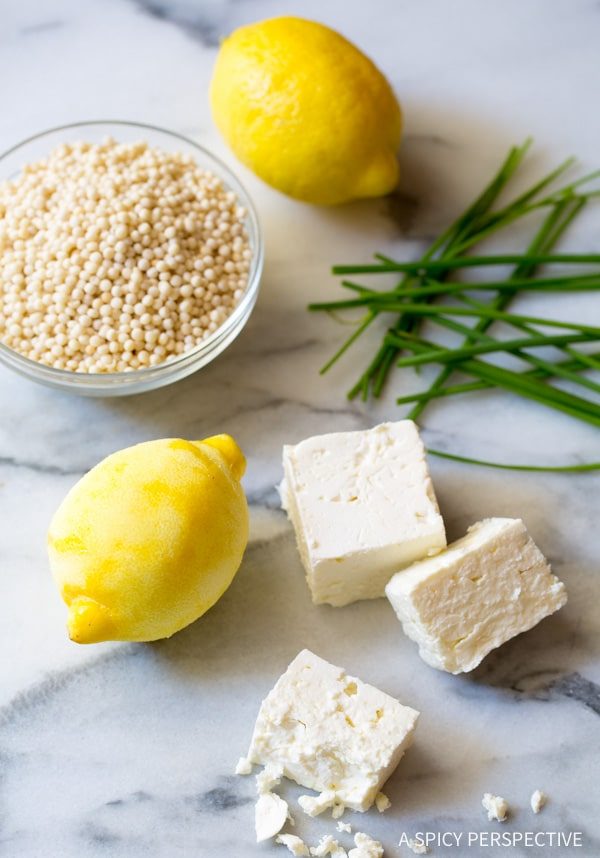

<!DOCTYPE html>
<html lang="en"></html>>
    <head>
        <meta charset="UTF-8">
        <title>Recipes</title>
        <h1>Vegan Lentil Fesenjān</h1>
        
        <h3>Hearty Lentil Fesenjān (Pomegranate Walnut Stew)</h3>
        <p>We’ve been big fans of Fesenjān for years now—ever since John’s aunt 
            introduced us to it at a Persian restaurant in San Diego. Traditionally 
            prepared for special occasions, Fesenjān is perfect for colder months. 
            It’s hearty, comforting, savory-sweet, and so simple to make. Let us 
            show you how!
        </p>
        <p>
            9-ingredient vegan Fesenjān made with lentils! A hearty stew of toasted 
            walnuts, pomegranate molasses, onion, and spices. A comforting, 
            Persian-inspired, plant-based meal!
        </p>
        <ul>
            <li>1 cup raw walnuts</li>
            <li>2-4 Tbsp pomegranate molasses (or pomegranate juice)</li>
            <li>1/4 cup water</li>
            <li>11 large yellow onion, finely chopped</li>
            <li>1/4 tsp each sea salt and black pepper (plus more to taste)</li>
            <li>2 ½ cups vegetable broth (or store-bought)</li>
            <li>1 cup rinsed uncooked brown or green lentils*</li>
            <li>1-2 Tbsp maple syrup</li>
            <li>1/2 tsp ground turmeric (plus more to taste)</li>
            <li>1/2 tsp ground cinnamon (plus more to taste)</li>
            <li>Salt and pepper</li>
        </ul>
        <ol>
            <li>Simply sauté the onion and minced garlic for 3-4 minutes to soften.</li>
            <li>Add the chicken broth, raw chicken breasts, lemon zest, and crushed 
                red pepper to the pot. Raise the heat to high, cover, and bring to a 
                boil. Once boiling, reduce the heat to medium, then simmer for 5 
                minutes</li>
            <li>Stir in the couscous, salt, and black pepper to taste. Simmer another 
                5 minutes. Then turn the heat off.</li>
            <li>Remove the two chicken breasts from the pot and shred the chicken. 
                Then place it back in the pot. Stir in the crumbled feta cheese and 
                chopped chive.</li>
            <li>Taste then salt and pepper as needed. Serve warm.</li>
        </ol>
        
    </head>
</html>